The code mdlj.c was run according to the instructions given in
Case Study 4 in F&S: namely, we have 108 particles on a simple cubic
lattice at a density 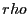 = 0.8442 and temperature (specified by
velocity assignment and scaling) initially set at  = 0.728. A
single run of 600,000 time steps was performed, which took about 10
minutes on my laptop. (This is about 10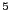 particle-updates per
second; not bad for a laptop running a silly 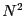 pair search, but
it's only for 100 particles...the same algorithm applied to 10,000
would be slower.)
The commands I issued looked like:
= 0.728. A
single run of 600,000 time steps was performed, which took about 10
minutes on my laptop. (This is about 10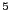 particle-updates per
second; not bad for a laptop running a silly 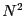 pair search, but
it's only for 100 particles...the same algorithm applied to 10,000
would be slower.)
The commands I issued looked like:
cfa@abrams01:/home/cfa/dxu/che800-002>mkdir md_cs2 cfa@abrams01:/home/cfa/dxu/che800-002>cd md_cs2 cfa@abrams01:/home/cfa/dxu/che800-002/md_cs2>../mdlj -N 108 \ -fs 1000 -ns 600000 -rho 0.8442 -T0 0.728 -rc 2.5 \ -sf w >& 1.out & cfa@abrams01:/home/cfa/dxu/che800-002/md_cs2>The final & puts the simulation ``in the background,'' and returns the shell prompt to you. You can verify that the job is running by issuing the ``top'' command, which displays in the terminal the a listing of processes using CPU, ranked by how intensively they are using the CPU. This command ``takes over'' your terminal to display continually updated information, until you hit Ctrl-C. You can also watch the progress of the job by tail'ing your output file, 1.out:
cfa@abrams01:/home/cfa/dxu/che800-002/md_cs2>tail 1.out 36 -294.14399 61.00381 -233.14018 -8.67332e-05 0.37657 13.60634 37 -293.52976 60.38962 -233.14014 -8.69020e-05 0.37278 13.62074 38 -293.10113 59.96093 -233.14020 -8.66266e-05 0.37013 13.62894 39 -292.85739 59.71704 -233.14035 -8.59752e-05 0.36862 13.62943 40 -292.79605 59.65542 -233.14063 -8.47739e-05 0.36824 13.62458 41 -292.91274 59.77171 -233.14103 -8.30943e-05 0.36896 13.61425 42 -293.20127 60.05973 -233.14154 -8.09009e-05 0.37074 13.59889 43 -293.65399 60.51186 -233.14213 -7.83670e-05 0.37353 13.57847 44 -294.26183 61.11902 -233.14281 -7.54321e-05 0.37728 13.55276 45 -295.01420 61.87068 -233.14352 -7.23805e-05 0.38192 13.52180The -f flag on the tail command makes the command display the file as it is being written. (This will be demonstrated in class.)
From the command line arguments shown above, we can see that this simulation run will produce 600 snapshots, beginning with 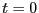 and outputting every 1000 steps. Each one contains 108 sextuples to eight decimal places, which is about 65 bytes times 108 = 7 kB. The actual file size is about 7.6 kB, which takes into account the repetitive particle type indices at the beginning of each line. So, for 600 such files, we wind up with a requirement of about 4.5 MB. As few as seven years ago, one might have raised an eyebrow at this; nowadays, this is very nearly an insignificant amount of storage (it is roughly 1/1000th of the space on my laptop's disk).
After the run finishes, the first thing we can reproduce is Fig. 4.3:
| 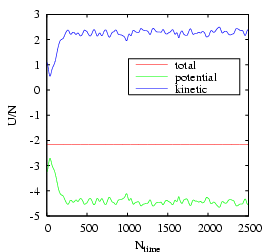 | ||
First, compute the variance of the 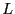 samples of 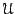:
| 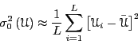 | (149) |
| 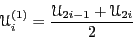 | (150) |
| 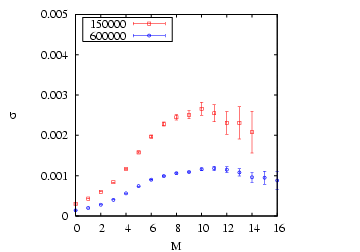 | ||
|
| Run | 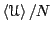 | 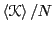 | 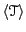 | 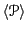 |
| 1 | 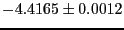 | 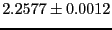 | 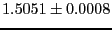 | 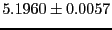 |
| 2 | 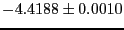 | 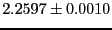 | 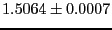 | 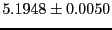 |
| 3 | 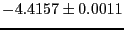 | 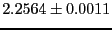 | 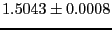 | 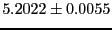 |
| Avg. | 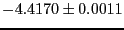 | 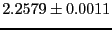 | 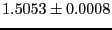 | 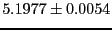 |
A second major objective of this case study is to demonstrate how to
compute the radial distribution function, 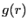. The radial
distribution function is an important statistical mechanical function
that captures the structure of liquids and amorphous solids. We can
express using the following statement:
| 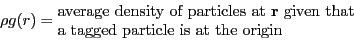 | (151) |
| 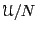 | 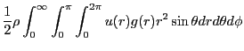 | (153) | |
| 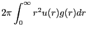 | (154) |
The procedure we will follow will be to write a second program (a ``postprocessing code'') which will read in the configuration files (``samples'') produced by the simulation, mdlj.c. Algorithm 7 on p. 86 of F&S demonstrates a method to compute by sampling the current configuration, presumably in a simulation program, although this algorithm tranfers perfectly into a post-processing code.
The general structure of a post-processing code could look like this:
We will consider a code, rdf.c, that implements this algorithm for computing , but first we present a brief argument for post-processing vs on-the-fly processing for computing quantities such as . For demonstration purposes, it is arguably simpler to drop in a -histogram update sampling function into an existing MD simulation program to enable computation of during a simulation, compared to writing a wholly separate program. After all, it nominally involves less coding. The counterargument is that, once you have a working (and eventually optimized) MD simulation code, one should be wary of modifying it. The purpose of the MD simulation is to produce samples. One can produce samples once, and use any number of post-processing codes to extract useful information. The counterargument becomes stronger when one considers that, for particularly large-scale simulations, it is simply not convenient to re-run an entire simulation when one discovers a slight bug in the sampling routines. The price one pays is that one needs the disk space to store configurations.
As shown earlier, one MD simulation of 108 particles out to 600,000 time steps, storing configurations every 1,000 time steps, requires less than 5 MB. This is an insignificant price. Given that we know that the MD simulation works correctly, it is sensible to leave it alone and write a quick, simple post-processing code to read in these samples and compute .
The code rdf.c is a C-code implementation of just such a post-processing code. Below is the function that conducts the sample:
0 void update_hist ( double * rx, double * ry, double * rz,
1 int N, double L, double rc2, double dr, int * H ) {
2 int i,j,bin;
3 double dx, dy, dz, r2, hL = L/2;
4
5 for (i=0;i<(N-1);i++) {
6 for (j=i+1;j<N;j++) {
7 dx = rx[i]-rx[j];
8 dy = ry[i]-ry[j];
9 dz = rz[i]-rz[j];
10 if (dx>hL) dx-=L;
11 else if (dx<-hL) dx+=L;
12 if (dy>hL) dy-=L;
13 else if (dy<-hL) dy+=L;
14 if (dz>hL) dz-=L;
15 else if (dz<-hL) dz+=L;
16 r2 = dx*dx + dy*dy + dz*dz;
17 if (r2<rc2) {
18 bin=(int)(sqrt(r2)/dr);
19 H[bin]+=2;
20 }
21 }
22 }
23 }
H is the histogram. One can see that the bin value is computed
on line 18 by first dividing the actual distance between members of
the pair by the resolution of the histogram, 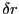. This
resolution can be specified on the command-line when rdf.c is
executed. Also notice that the histogram is updated by 2, which
reflects the fact that either of the two particles in the pair can be
placed at the origin. Also notice that lines 10-15 implement the
minimum image convention.
Now, let's execute rdf in a directory we had previously run the MD simulation. That directory contains the 600 snapshots.
cfa@abrams01:/home/cfa/dxu/che800-002/md_cs2/run1>../../rdf -fnf %i.xyz -for 10000,590000,1000 -rc 2.501 -dr 0.02 > rdfThis computation begins with the snapshot at timestep 10,000, and includes every snapshot between 10,000 and 590,000. A cutoff of 2.501 is used, and a bin size of 0.02 . Output is redirected to the file rdf. If we look at rdf, we see
cfa@abrams01:/home/cfa/dxu/che800-002/md_cs2/run1>more rdf 0.0000 0.0000 0.0200 0.0000 0.0400 0.0000 0.0600 0.0000 0.0800 0.0000 0.1000 0.0000 0.1200 0.0000 0.1400 0.0000 0.1600 0.0000 0.1800 0.0000 0.2000 0.0000 0.2200 0.0000 0.2400 0.0000 0.2600 0.0000 0.2800 0.0000 0.3000 0.0000 0.3200 0.0000 0.3400 0.0000 0.3600 0.0000 0.3800 0.0000 0.4000 0.0000 0.4200 0.0000 ^COf course, doesn't become non-zero until about = 1. Below is a gnuplot-generated figure of , averaged over the three independent runs.
| 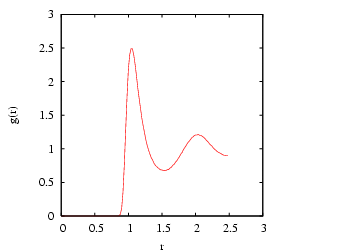 | ||
|